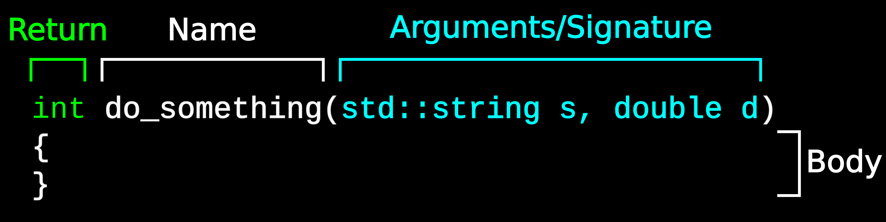

Function Calling and Arguments#
Overview
Questions:
How do functions differ in C++ and Python?
How are arguments passed in C++?
How can we protect variables (and function arguments) from changing?
Objectives:
Learn about C++ functions and argument passing
Learn about the const keyword
Learn about returning multiple things from a function
Prerequisites
Knowledge basic function syntax in C++
Knowledge of C++ pointers and references
Function overview#
Like in python, functions are a fundamental building block in C++.
Let’s refresh our memories of some of the terminology around functions. Note that this terminology is the same as in Python, although the return type is not defined with the function name.
The void Keyword#
void can be used in the signature to signify a function takes zero arguments,
and can also be used as the return type to signify the function does not
return anything. See, for example, our main function.
void say_something(void)
{
// No return type, no arguments!
std::cout << "Something!" << std::endl;
}
Argument passing by copy#
Now that we have gone over void and const, as well as pointers and
references in previous lessons, lets take a look at how these concepts can
be exploited when calling functions.
This will mark a large departure from Python, and a significant source of confusion for those coming from Python. Python only has one real way to pass arguments, while C++ has several
In C++, unless otherwise specified, arguments are passed into functions by copying the contents. The two main things to remember about passing via copying is that
This can be expensive for large data types (think a matrix or an
std::vectorwith many elements)Changes made to the data within the function are not reflected outside
This last point can be a benefit, however, and can protect you from making accidental mistakes.
Lets start by writing a function to convert temperatures from Fahrenheit to Celsius.
#include <iostream> // for std::cout, std::endl
void convert_F_to_C(double temperature)
{
temperature = (temperature - 32.0)*(5.0/9.0);
}
int main(void)
{
double temperature = 68.1;
convert_F_to_C(temperature);
std::cout << "Temperature is " << temperature << std::endl;
return 0;
}
Here is the output
Temperature is 68.1
You will notice that the value of temperature in the main function does
not change, even though we changed it inside of convert_F_to_C. That is
becuase the variable temperature inside convert_F_to_C is a copy of the
temperature variable in main.
Discussion
What would be a better way of writing the temperature function?
Argument passing by reference#
Lets say you really needed the convert_F_to_C function to modify the
temperature variable in-place and have that reflected outside the
convert_F_to_C function. We can do that via passing by reference.
You should remember the idea behind references from the previous lesson. A reference is similar to a pointer, and simply refers to an existing variable. In this case, when the function is called, a reference is created to the variable being passed into the function. This variable exists outside the function, and so this allows the function to modify that variable’s contents through the reference.
Passing by reference is very common in C++. In general, this should be the default way to pass in data the will be changed in the function.
#include <iostream> // for std::cout, std::endl
void convert_F_to_C(double & temperature)
{
temperature = (temperature - 32.0)*(5.0/9.0);
}
int main(void)
{
double temperature = 68.1;
convert_F_to_C(temperature);
std::cout << "Temperature is " << temperature << std::endl;
return 0;
}
The example above is the same as the previous example, except with the addition
of the & into the function signature of convert_F_to_C. The output shows that
this makes all the difference.
Temperature is 20.0556
Exercise
Print the address of the variable inside and outside the convert_F_to_C function.
Solution
#include <iostream> // for std::cout, std::endl
void convert_F_to_C(double & temperature)
{
std::cout << "In convert_F_to_C: " << &temperature << std::endl;
temperature = (temperature - 32.0)*(5.0/9.0);
}
int main(void)
{
double temperature = 68.1;
std::cout << "In main: " << &temperature << std::endl;
convert_F_to_C(temperature);
std::cout << "Temperature is " << temperature << std::endl;
return 0;
}
In main: 0x7ffe27c761e0
In convert_F_to_C: 0x7ffe27c761e0
Temperature is 20.0556
The address will likely differ from my example, however the addresses should be the same.
Passing by constant reference#
Passing by constant reference allows for larger amounts of data to be passed without incurring a performance penalty due to copying, while ensuring that the data is not modified within the function. This is a very common idiom that you will see in C++ packages.
If you try modifying the constant reference inside the function, it will cause a compiler error.
#include <iostream> // for std::cout, std::endl
double convert_F_to_C(const double & temperature)
{
temperature = (temperature - 32.0)*(5.0/9.0);
}
int main(void)
{
double temperature = 68.1;
temperature = convert_F_to_C(temperature);
std::cout << "Temperature is " << temperature << std::endl;
return 0;
}
Comparison to Fortran
A const reference in a Function signature is similar to
an argument being declared as intent(in) in Fortran. A plain non-const
reference would be similar to intent(inout).
Argument passing by pointer#
An alternative to passing by reference is passing by pointer. For C++, this is not generally recommended much anymore, however is still very common in C.
To pass by pointer, mark the argument type in the function
signature as a pointer type (with a *). When calling the function,
you pass the address of the variable. The function directly
accesses the variable with the * operator.
While not as common in C++, it is sometimes used to pass around arrays
allocated with new, after which elements are accessed with *.
This is very awkward for many other uses, where references are preferred.
#include <iostream> // for std::cout, std::endl
double convert_F_to_C(const double * temperature)
{
temperature = (temperature - 32.0)*(5.0/9.0);
}
int main(void)
{
double temperature = 68.1;
temperature = convert_F_to_C(&temperature);
std::cout << "Temperature is " << temperature << std::endl;
return 0;
}
Const correctness#
As we have seen, a function that takes a const reference can accept both
const and non-const data. However, a function taking a non-const
reference is restricted to only taking non-const objects. This leads to
a general rule of writing function arguments: make your reference (and
pointer) arguments const unless you actually intend to modify them. This
way, your function is usable in all cases, since the calling function may have
const data it needs to pass in.
This thinking is called const correctness. If you do not do this, you will
eventually write yourself into a corner and will find yourself refactoring
your entire project. So it is much easier to start thinking about const
from the very beginning. After some experience, it will be second nature.
Making a choice#
So now we have several ways to pass arguments to a function. Which should we use?
Dynamically allocated memory? Pointer is basically your only option
Not exactly true in C++11
The function does not modify the argument
Plain data type (int, double) - pass by copy
Small data structure (some strings) - pass by copy
Can make code more safe with only a small performance hit
Larger data structure (vector, string) - constant reference
The function modifies the argument
Generally, use a (non-const) reference
Function overloading#
Now we come to a feature of C++ that is not available in C or in Python. In C++, we can have multiple functions with the same name, as long as the function signature is different. The compiler will determine which function will be used based on the arguments passed to the function.
For example, we can have to convert_F_to_C functions - one that takes
just a double, and the other that takes a std::vector<double>.
#include <iostream> // for std::cout, std::endl
#include <vector>
double convert_F_to_C(const double & temperature)
{
temperature = (temperature - 32.0)*(5.0/9.0);
}
std::vector<double> convert_F_to_C(const std::vector<double> & temperatures)
{
std::vector<double> converted;
for(size_t i = 0; i < temperatures.size(); i++)
{
double temp = convert_F_to_C(temperatures[i]);
converted.push_back(temp);
}
return converted;
}
int main(void)
{
double single_temperature = 68.1;
// Calls the single double version
single_temperature = convert_F_to_C(single_temperature);
std::vector<double> temperatures;
temperatures.push_back(0.0);
temperatures.push_back(-40.0);
temperatures.push_back(123.4);
// Calls the version taking a vector
std::vector<double> new_temperatures = convert_F_to_C(temperatures);
return 0;
}
Argument-dependent lookup
The process by which C++ determines the proper function to call based on arguments is extremely complex. It has to take into account not just argument types, but (implicit) conversions, custom conversions, and more advanced C++ features such as templates. In general, the compiler will do the correct thing, and if there is ambiguity, will require further clarification on your part.
Default Arguments#
A default for an argument can be supplied in the function signature. However, the given default argument must be of the correct type (not like in Python, where you can set the argument default to be None).
#include <iostream>
double convert_F_to_C(double temperature = 0.0)
{
return (temperature - 32.0)*(5.0/9.0);
}
int main(void)
{
double temperature = 68.1;
convert_F_to_C(temperature);
std::cout << "Temperature is " << convert_F_to_C(68.1) << std::endl;
std::cout << "Temperature is " << convert_F_to_C() << std::endl;
return 0;
}
Temperature is 20.0556
Temperature is -17.7778
Multiple return from functions#
In C++, you can only return a single type from a function (unlike python) and this must be declared. But what if you do want to return multiple things?
We can do this using a part of the library called std::pair, which allows you
to bundle two different objects into a single object. (If you need more than
two, then you can use a std::tuple, which works similarly). You can then
access the data with .first and .second.
With std::pair, you must again define the types that it stores, but they
can be different types. Lets return the converted temperature and the unit
as a pair.
To use std::pair, include the utility component of the standard library.
#include <iostream>
#include <utility> // std::pair
std::pair<double, std::string> convert_F_to_C(double temperature = 0.0)
{
double new_temperature = (temperature - 32.0)*(5.0/9.0);
return std::pair<double, std::string>(new_temperature, "Celsius");
}
int main(void)
{
double temperature = 68.1;
std::pair<double, std::string> t_info = convert_F_to_C(temperature);
std::cout << "Temperature is " << t_info.first << " " << t_info.second << std::endl;
return 0;
}
Temperature is 20.0556 celsius
make_pair and the auto keyword#
In the above example, std::pair<double, std::string> appears in a few
places. We could always replace this with a typedef, but we can also remove
some instances. This kind of thing is often done in post-C++11, which is
one of the reasons newer C++ code looks very different from old code.
First, we can remove the std::pair creation in the function by using the
std::make_pair function. This function automatically deduces the types
from the arguments, creating the appropriate std::pair.
The second thing we can do is use the auto keyword. This automatically
deduces a type from a given expression. Note that the type of the variable
is still fixed, we are just letting the compiler figure out the type for us.
#include <iostream>
#include <utility>
std::pair<double, std::string> convert_F_to_C(double temperature = 0.0)
{
double new_temperature = (temperature - 32.0)*(5.0/9.0);
return std::make_pair(new_temperature, "celsius");
}
int main(void)
{
double temperature = 68.1;
auto t_info = convert_F_to_C(temperature);
std::cout << "Temperature is " << t_info.first << " " << t_info.second << std::endl;
return 0;
}
Temperature is 20.0556 celsius
Structured bindings and newer features#
C++17 introduced a new syntax that makes C++ almost look like python! This is called structured binding and can be used to “unpack” a pair.
Depending on the compiler, you may need to compile with std=c++17 on the command line.
#include <iostream>
#include <utility>
std::pair<double, std::string> convert_F_to_C(double temperature = 0.0)
{
double new_temperature = (temperature - 32.0)*(5.0/9.0);
return std::make_pair(new_temperature, "celsius");
}
int main(void)
{
auto [temperature, units] = convert_F_to_C(123.0);
std::cout << "Temperature is " << temperature << " " << units << std::endl;
return 0;
}
Lastly, we can also let the compiler deduce the return type of the function with auto.
#include <iostream>
#include <utility>
auto convert_F_to_C(double temperature = 0.0)
{
double new_temperature = (temperature - 32.0)*(5.0/9.0);
return std::make_pair(new_temperature, "celsius");
}
int main(void)
{
auto [temperature, units] = convert_F_to_C(123.0);
std::cout << "Temperature is " << temperature << " " << units << std::endl;
return 0;
}
This code is beginning to look like python a bit! However, return-type deduction is somewhat discouraged, because it reduces the self-documenting quality of functions. It is still useful in writing very generic code, which is beyond this course.
Key Points
C++ can have multiple functions with the same name
C++ functions can take arguments by copy, pointer, and reference